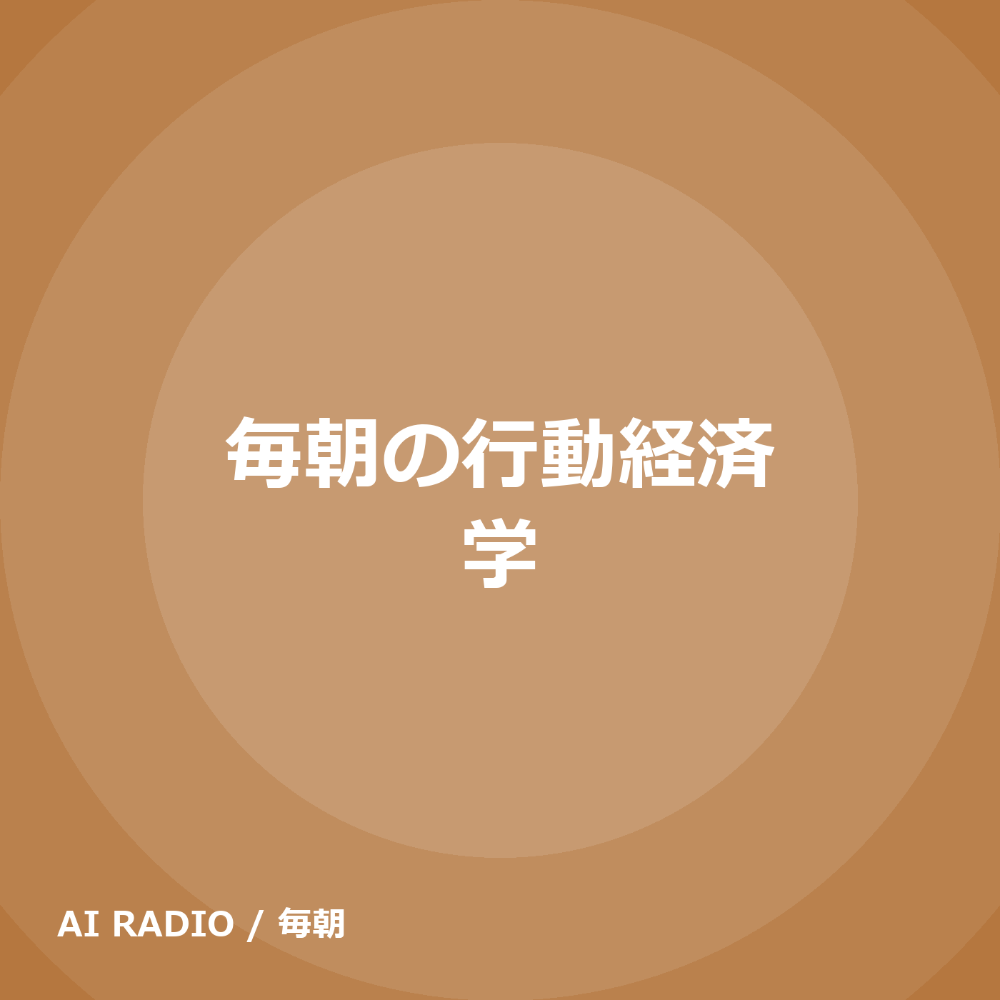
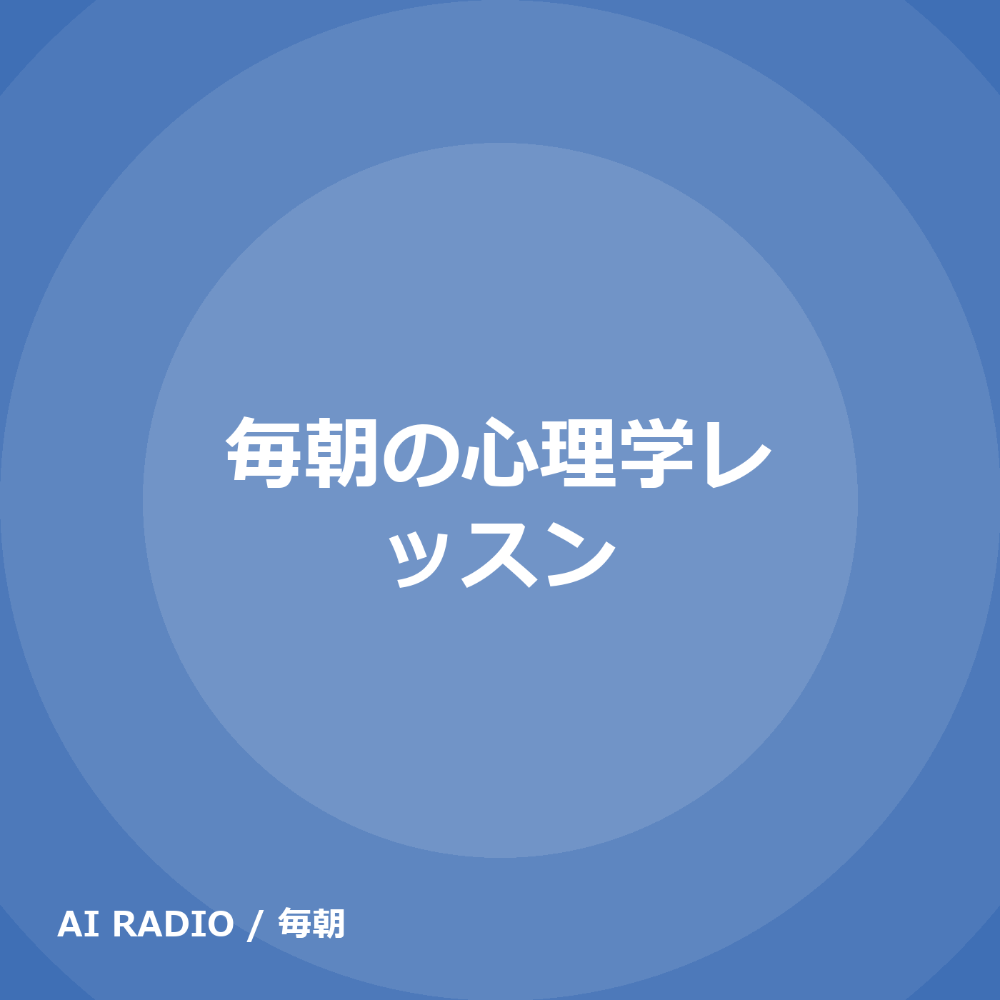

毎朝ラジオ
AI が毎朝自動生成する 5 分のポッドキャスト。フィードURLをポッドキャストアプリに登録すると自動で届きます。

毎朝の行動経済学(毎朝・Nana・10回)
損失回避・アンカリング・ナッジなど、人のお金と選択のクセを Nana が毎朝ひとつ5分で解説する番組。AIが台本を書き、AI音声でお届けします。
https://ryoheiraring.github.io/morning-radio/behavioral-economics/feed.xml
Pocket Casts で登録
RSS
暗号資産朝刊(毎朝・Nana／Sou・10回)
進行役の Nana と解説役の Sou が読む、直近24時間の暗号資産朝刊。市況(BTC/ETH/BNB/HYPE)・Binance の動き・Hyperliquid の動き・Web3 ニュース上位3本・今日の注目ポイントの5項目。CoinGecko・Binance/Hyperliquid 公式データ・主要メディアの公式RSSが素材。AIが台本を書き、AI音声でお届けします。
https://ryoheiraring.github.io/morning-radio/crypto-morning/feed.xml
Pocket Casts で登録
RSS
人類の進化 〜ナナとソウの土曜日〜(毎週土曜・Nana／Sou・1回)
700万年の人類史をたどる週末の対話番組。進行役の Nana が問いかけ、解説役の Sou が答える5分。毎週土曜更新。AIが台本を書き、AI音声でお届けします。
https://ryoheiraring.github.io/morning-radio/evolution/feed.xml
Pocket Casts で登録
RSS

毎朝の心理学レッスン(毎朝・Nana・10回)
認知・感情・対人関係・発達など心理学の定番テーマを、Nana が毎朝ひとつ5分で解説するレッスン番組。AIが台本を書き、AI音声でお届けします。
https://ryoheiraring.github.io/morning-radio/psychology/feed.xml
Pocket Casts で登録
RSS
エッジの見つけ方(毎朝・Nana／Sou・6回)
進行役の Nana と解説役の Sou が、トレードの「エッジ(確率的な優位)」を自分で見つけ・確かめ・管理するコツを毎朝ひとつ、数式なしで語る5〜6分。暗号資産(Hyperliquid・Binance)の具体例つき。投資助言ではありません。AIが台本を書き、AI音声でお届けします。
https://ryoheiraring.github.io/morning-radio/trade-edge/feed.xml
Pocket Casts で登録
RSS
台本は Claude、音声は AivisSpeech(Nana: morioki / Sou: fumifumi)。AI 生成のため誤りを含む可能性があります。